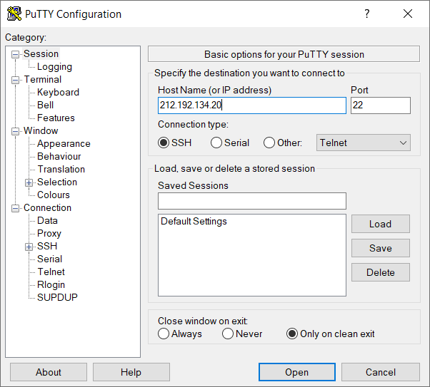

-
Подключение к учебному серверу по SSH с помощью клиента Putty.

-
Использование команды ping c целью определения IP-адреса веб-сервера kubsu.ru и качества соединения между серверами kubsu-dev.ru и kubsu.ru
-
Использование команды nslookup c целью определения A-записи(адресная запись, соответствие между именем и IP-адресом) и MX-записи(Адрес почтового шлюза для домена. Состоит из двух частей — приоритета (чем число больше, тем ниже приоритет), и адреса узла) домена kubsu.ru и kubsu-dev.ru
-
Использование команды whois c целью определения даты регистрации и других параметров домена kubsu.ru и kubsu-dev.ru
-
Использование команды git clone для клонирования репозитария в каталог /var/www/html/u20301/
-
Применение клиента FileZilla для соединения с учебным сервером и копирования на локальный компьютер файлов задания из каталога /var/www/html/u20301/